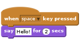
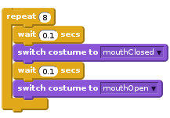
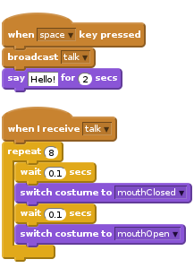
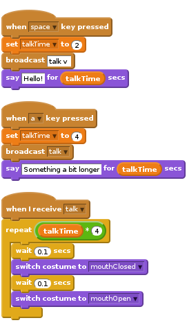

Activity Checklist
To make your monster talk, you can just use the
Saysprite.
To make it a bit more impressive, you could make the monsters mouth open and close whilst it is talking. To do this, edit the sprite that contains the mouth - create a new
costumethat has a closed mouth. By switching between the two, you can animate the mouth opening and closing.
To hook the two up, have the block that does the
saybroadcast a message that the other block can react to.
To make this a bit more flexible, use a variable to control the
talkTimethe monster says something for, and also to control how many times the animation loop is repeated.
(Notice how we multiply talkTime by 4 to make sure the loop repeats enough times?)
You can also make your monster speak using sound by using one of the sound blocks. Just be sure to import the sounds first in the sounds tab.
![when I receive [talking v]
play sound [Screech v]](22fede61f0444e7056399a43b9be67e4d363f51f.png)
Why not try adding sounds to other events, you could use a spooky hovering sound for a ghost drifting around the screen!
If you have a microphone on your computer you can even record your own sounds, surprise your classmates by recording a loud monster ROOOAAAAARRRRR!!!